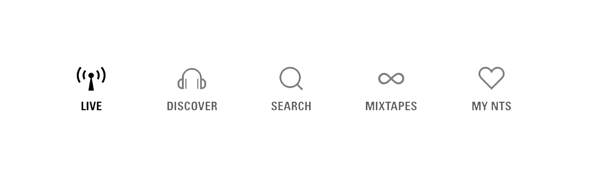
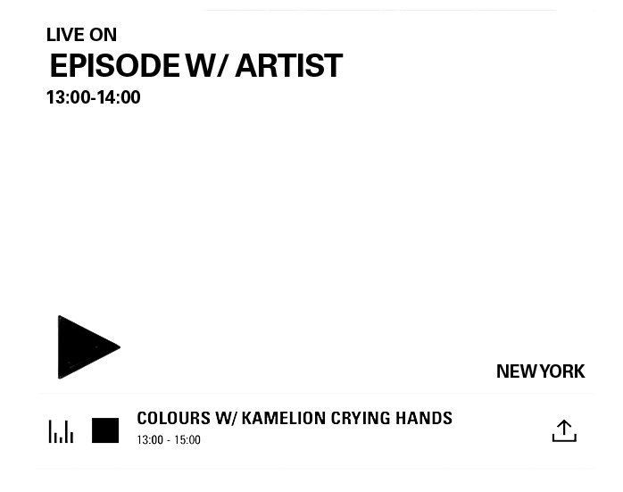
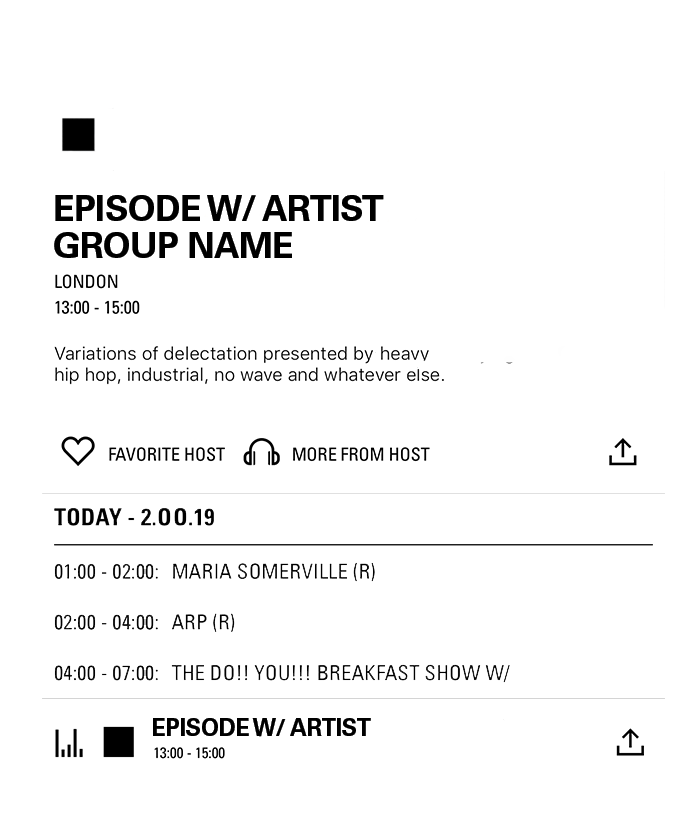

LIVEGUIDE
STEP 01
To begin your listening experience, start by opening the application.
STEP 02

Once you have loaded the application, you will notice a bar running along th bottom of the screen with four options. To listen to a live station, press on the live tab.
STEP 03

When in the live tab, choose a station that interests you and press play
STEP 04

For more information about the radio station (DJ, Song Names, Genres etc.) Click the station name.